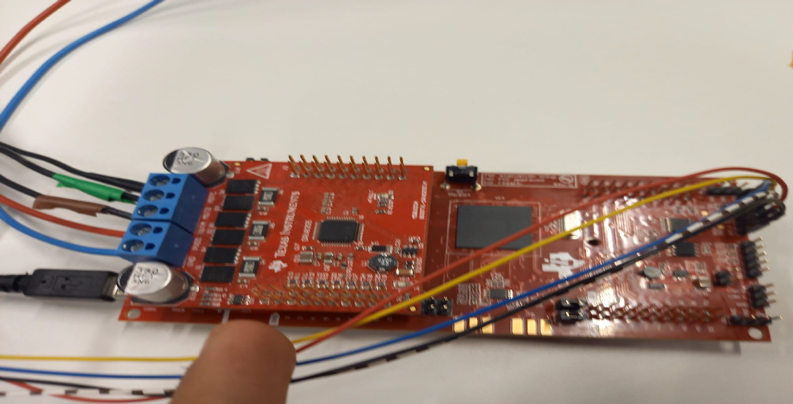
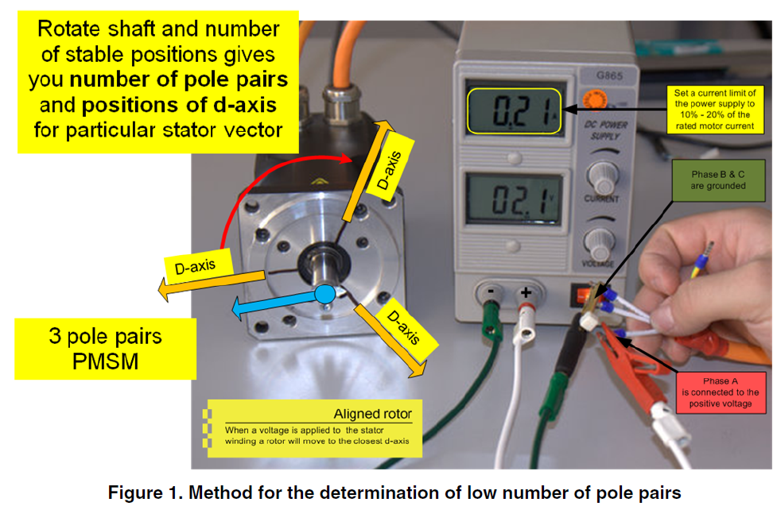
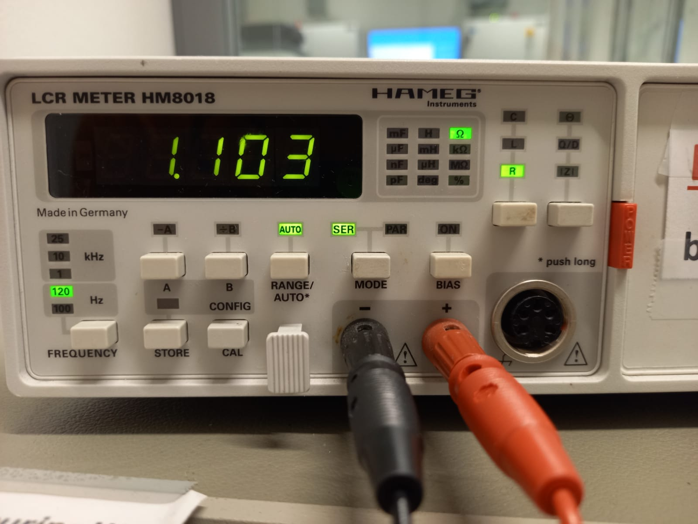

Jesus, I need professional help.
I need 15 ECTS, and this was more fun than exams and less of a hassle than an internship.
Texas Instruments TMS320F28379D Launchpad
Texas Instruments BoostXL-drv8305
24-volt power supply
M-2310P-LN-04K Brushless Three-Phase permanent magnet motor
Micro-fit connector
Oscilloscope
Voltage probes
Current probes
Mini USB cable for programming
Laptop/Computer with Matlab 2021b or later. You need to motor controller block set and all relevant code for C2000 programming with Simulink.
Now on to how to set everything up
Assembling everything together gives the image below

The blue wire on the bottom is ground. The red is PVDD (Power). The BoostXL-drv8305 does not have reverse voltage protection so don’t mix them up.
I added brown electrical tape to represent phase A motor side. Green is phase B and black tape is phase C. Mixing up phases can cause the motor to spin the opposite direction.
Make sure you can already do the Blinky example from Matlab. Ps you need Control suite,Code composer studio and Embedded coder, don't forger Control suite from TI.
I used m-2310p-ln-04k from teknic.com I also have a local copy local copy.
| Parameter | Value | Unit |
|---|---|---|
| Pole pairs | 4 | |
| Resistance, phase to phase | 0.72 | \(\Omega\) |
| Inductance, phase to phase | 0.40 | \(mH\) |
| Back EMF \(K_e\) | 4.64 | Vpeak/kRPM |
For the manual approach I followed the NXP application document AN4680. Sadly they took it down so the link is to a local copy.
For the number of pole pairs I followed

The reasoning is pretty straight forward by using DC voltage phase A would be North and Phase B and C would be South. The permanent magnet's South would be attracted to the stator North.
The approach is quite straightforward: measure the resistance of two phase wires to determine the phase-to-phase resistance. For better accuracy, use an LCR meter or, if available, an mOhm meter. To find the phase-to-neutral resistance, simply divide the phase-to-phase resistance by 2.

For single phase measurement:
\(K_{ephx=V \)/p>
Here is an inline equation: \(E=mc^2\)
And here is a displayed equation: \[F = G \frac{{m_1 m_2}}{{r^2}}\]